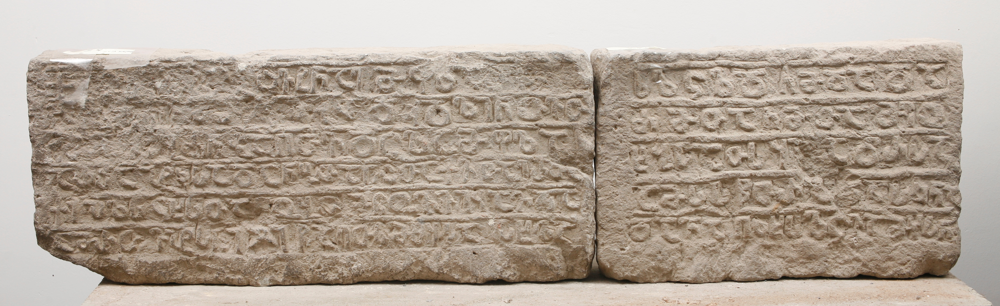

აბასთუმნის წარწერა
შინაარსი / Summary
მემორიალური
ბიბლიოგრაფია Bibliography
კრიტიკული გამოცემა Interpretive Edition
† შ(ე)წ(ევნი)თა ქ(რისტ)ჱსითა ჲვ(ს)ტ(ი)ნ(ი)ა(ნ)ე მ(ე)ფ(ი)სა ზე მე
გ(ა)ნ(ებუ) ნ(ა)თ(ესა)ვთ ყ(ოველ)თა ჩ(ემთ)ა ბრძ(ა)ნ(ე)ბ(ი)თა ღ(მრ)თ(ი)ვდ(ა)ც(უ)ლ(ის)ა მ(ამ)ფლ(ის)ა
არ(შუ)შა პ(ა)ტ(რი)კ(იოსი)სა და ნ(ე)ბ(ი)თა ღ(მრ)თ(ისაჲ)თა ქ(ართ)ვ(ელ)თა ერ(ის)თ(ავის)ა
5ქრ(ისე)პ(უ)ლ(ი)ს ც(ი)ხ(ე)ს(ა)თა ბო(ძე)ბ(ი)თ(ა) მ(ო)წ(უე)ო(ჳ)ლ ვიყავ და
ა(ღუ)მ(ა)რთე პ(ა)ტ(იო)ს(ა)ნი ჯ(უარ)ი წ(მიდის)ა ღ(მრ)თ(ი)სმშ(ო)ბ(ელი)სა ს(ა)ხ(ე)ლ(ს)ა
ს(ა)ლ(ო)ც(ვე)ლ(ა)დ ჩ(ე)მდა და
ძმ(ა)თა ჩ(ე)მთა მეო -
ხ(ე)ბ(ი)სათ(ჳ)ს ყ(ს)ა ჭ(ი)რსა
10ამ(ა)ს ს(ა)წ(უ)თრ(ო)ს და ს(აუ)კ(უ)ნ(ე)ს
და ვ(ი)ნ აღ(მოი)კ(ით)ხ(ო)ს ლ(ო)ცვ(ას)ა მ(ომი)ჴსნ(ე)
დიპლომატიური გამოცემა Diplomatic Edition
† ႸႼႧႠ ႵჁႱႨႧႠ ჂႥႲႬႠႤ ႫႴႱႠ ႦႤ ႫႤ
ႢႬ ႬႧႥႧ ႷႧႠ ႹႠ ႡႰႻႬႡႧႠ ႶႧႥႣႺႪႠ ႫႴႪႠ
ႠႰႸႠ ႮႲႩႱႠ ႣႠ ႬႡႧႠ ႶႧႧႠ ႵႥႧႠ ႤႰႧႠ
5ႵႰႮႪႱ ႺႾႱႧႠ ႡႭႡႧ ႫႼႭႪ ႥႨႷႠႥ ႣႠ
ႠႫႰႧႤ ႮႲႱႬႨ ႿႨ ႼႠ ႶႧႱႫႸႡႱႠ ႱႾႪႠ
ႱႪႺႪႣ ႹႫႣႠ ႣႠ
ႻႫႧႠ ႹႫႧႠ ႫႤႭ
ႾႡႱႠႧႱ ႷႠ ႽႰႱႠ
10ႠႫႱ ႱႼႧႰႱ ႣႠ ႱႩႬႱ
ႣႠ ႥႬ ႠႶႩႾႱ ႪႺႥႠ ႫჄႱႬ

აბასთუმნის წარწერა
{'ka': '† ქრისტეს შეწევნით ჲვსტინიანე მეფის ზეობის დროს მე [...] ღმრთისაგან განდიდებული ვიქმენ ნათესავთა შორის. ღვთივდაცული მამფლის არშუშა პატრიკიოსის\n ბრძანებითა, ღმრთისა და ქართველი ერისთავის ნებით ქრისეპულის ციხის ბოძებით მოწვეული ვიყავი და აღვმართე პატიოსანი ჯუარი წმიდა ღვთისმშობლის\n სახელზე ჩემთვის და ჩემი ძმებისთვის სალოცველად, ყოველი ჭირისაგან მეოხებისათვის ამ საწუთროში და საუკუნო ცხოვრებაში.\n ვინც ამოიკითხოს, ლოცვაში მომიხსენეთ.'}
{'default': 'წარწერაში განკვეთილობისა და დაქარაგმების ნიშნები არ არის. სიტყვები ერთმანეთისაგან არ არის დაცილებული. სტრიქონები ერთმანეთისაგან გამოყოფილია\n ვიწრო რელიეფური ზოლით.\n წარწერაში ქრისეპულის ანონიმი ციხისთავი მოგვითხრობს მის მიერ ღვთისმშობლის სახელზე წმ. ჯვრის აღმართვის შესახებ.\n წმ. ჯვარში აქ იგულისხმება ქვაჯვარი - კვარცხლბეკი\n მასში ჩასმული მაღალი (დაახ. 1,5-2 მ სიმაღლისა) ოთხკუთხა ან მრგვალი სვეტი (ზოგჯერ სადა, ზოგჯერ ორნამენტული, ზოგჯერ სიუჟეტური გამოსახულებებით, მათ შორის,\n ქტიტორის ან ქტიტორების) და ზემოთ, ამ სვეტში ჩასმული ქვის ჯვარი (უმეტესად თანაბარი ზომის მკლავებით). ციხისთავის მიერ აღმართული ამ ქვაჯვრიდან შემორჩენილია\n კვარცხლბეკიდან ჩამოჭრილი ორი თხელი ფილა რელიეფური ასომთავრული წარწერით (6 და 5 სტრიქონად).\n\n აბასთუმნის წარწერაში ორი ისტორიული პირი მოიხსენიება: ჲვსტინიანე მეფე და მამფალი არშუშა პატრიკიოსი და ქართველთა ერისმთავარი.\n წარწერას მკვლევრები სხვადასხვანაირად ათარიღებენ: სარგის კაკაბაძე - VII ს. ან VIII ს-ის I ნახევარი; ა. ბაქარაძე და ს. ბოლქვაძე - VI ს.\n ტექსტში ჯვრის აღმართვა დათარიღებულია ჲვსტინიანეს მეფობის დროით. მეფობის წლების მიხედვით რაიმე მოვლენის დათარიღება წელთაღრიცხვის უძველეს დროს გავრცელებული\n ერთ-ერთი ფორმაა და აბასთუმნის წარწერაშიც ისაა გამოყენებული. ჲვსტინიანე მეფედ ბიზანტიის იმპერატორი იუსტინიანე II (685-695, 705-711) არის მიჩნეული.\n იგი ორჯერ მეფობდა და რადგან უცნობია მისი მეფობის რომელ პერიოდს მიეკუთვნება ეს წარწერა, ნოდარ შოშიაშვილი მას დროის საკმაოდ დიდი მონაკვეთით - 685-711 წწ. ათარიღებეს.\n წარწერის დათარიღებისას გათვალისწინებულია პალეოგრაფიული ნიშნები და ტექსტში დასახელებული ისტორიული პირების მოღვაწეობის დრო. არშუშა პატრიკიოსი, რომელიც\n ქართველთა ერისმთავრად იწოდება, ჯერ კიდევ ე. თაყაიშვილმა მიიჩნია „ევსტათი მცხეთელის მარტვილობაში“ დასახელებულ ქართლის მარზპან არშუშად\n (E. Такаишвили,АЭРЗ, II, Тиф., 1905). მას პატრიკის ბიზანტიური ტიტულიც ჰქონია. კორნელი კეკელიძის მოსაზრებით, „ევსტათი მცხეთელის მარტვილობაში“ მოთხრობილი ამბავი\n განეკუთვნება ირანის შაჰის ხოსრო I ანუშირვანის (531-579) მეფობის დროს (კ. კეკელიძე, ძველი ქართული ლიტერატურის ისტორია, ტ. I, თბ. 1980, 508-515),\n ე. ი. მამფალი არშუშა პატრიკიოსიც მისი თანამედროვეა. შესაბამისად, წარწერის დასაწყისში მოხსენიებული ჲვსტინიანე, რომლის ზეობითაც თარიღდება ჯვრის აღმართვა,\n არის ბიზანტიის იმპერატორი იუსტინიანე I დიდი (527-565) და არა იუსტინიანე II (685-695, 705-711). ვალერი სილოგავა ორი დასახელებული მმართველის მეფობის წლების თანხვედრის\n გამო მიიჩნევს, რომ აბასთუმნის წარწერა ჯვრის კვარცხლბეკისა 531-565 წწ. თარიღდება. რაც შეეხება ქრიზეპოლის ციხეს, მკვლევარი მიიჩნევს, რომ ის იგივე სამცხის ოქროს ციხეა,\n რომლის სახელი წარწერაში ბერძნულ-ბიზანტიური ფორმითაა გადმოცემული. წარწერაში დაქარაგმენით მოცემული ზმნა „ამრთე“ ვალერი სილოგავამ წყისის ჰაემეტური\n წარწერის ანალოგიით ჰაემეტური ფორმით გახსნა - აღჰუმართე. მკვლევარი ვარაუდობს, რომ საკუთრივ ჯვრის აღმმართველი\n ციხისთავის სახელი, რომლითაც იწყებოდა ტექსტი, ძველ დროსვე საგანგებოდ გადაუფხეკიათ, ალბათ, მის არაკეთილმოსურნეებს მისი სახელის წაშლის მიზნით.\n ამიტომაც ეს ჯვარი დღეს ანონიმურია. არსებობს ვახტანგ გოილაძის მოსაზრება, რომ ჯვრის აღმმართველი შეიძლება იყოს „ვარაზ-ბაკურ აპაჲ პატრიკიოზი“.\n ამავე მოსაზრებით, იგი უნდა იყოს ძმა წარწერის ტექსტშივე დასახელებული არშუშა პატრიკიოსისა (ვ. გოილაძე, ბიზანტიის აღმოსავლური პოლიტიკის ასახვა ქართულ ეპიგრაფიკაში,\n თბ. 2008, 34).'}
<div type="edition" xml:lang="ka" ana="mtavruli" xml:space="preserve">
<ab>
<lb n="1"/><w lemma="ქრისტე"><expan><abbr>ქ</abbr><ex>რისტ</ex><abbr>ე</abbr></expan></w>
<w lemma="განსუენება"><expan><abbr>გა</abbr><ex>ნ</ex><abbr>ო</abbr><ex>ჳ</ex><abbr>ს</abbr><ex>უ</ex><abbr>ენე</abbr></expan></w>
<w lemma="სულ">სოჳ<lb n="2" break="no"/>ლსა</w>
<name nymRef="ვაჩა">ვაჩაჲს<lb n="3" break="no"/>ასა</name>
<name nymRef="გურა"><expan><abbr>გო</abbr><ex>ჳ</ex><abbr>რაჲ<lb n="4" break="no"/>სასა</abbr></expan></name>
<name nymRef="მირა"><expan><abbr>მ</abbr><ex>ი</ex><abbr>რა</abbr><ex>ჲ</ex><abbr>ს</abbr><ex>ა</ex><abbr>ს</abbr><ex>ა</ex></expan></name>
</ab>
</div>